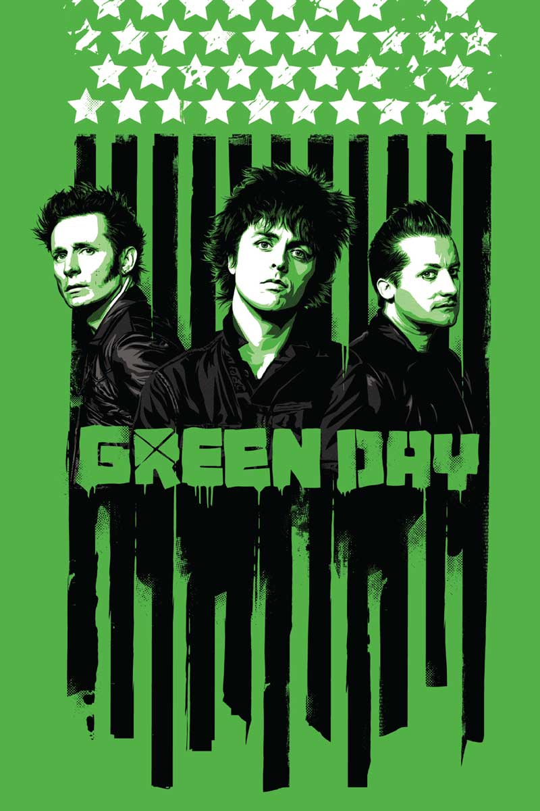

Green Day é uma banda de punk rock dos Estados Unidos formada em 1986, em East Bay, Califórnia. A banda é composta por 3 membros: Billie Joe Armstrong (guitarra e vocais), Mike Dirnt (baixo e vocais) e Tré Cool (bateria). A banda foi formada no início de 1986 com o nome de The Sweet Children, com o baterista Al Sobrante. Em 1989, a banda mudou para o nome atual, logo após lançou o seu primeiro álbum de estúdio 39/Smooth. É considerada como uma das bandas expoentes do pop punk, subgênero do punk rock. LISTA DE SHOWS DA TURNE - THE SAVIORS TOUR